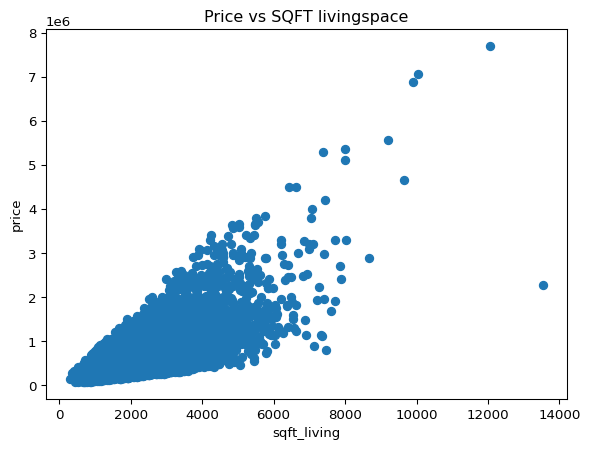
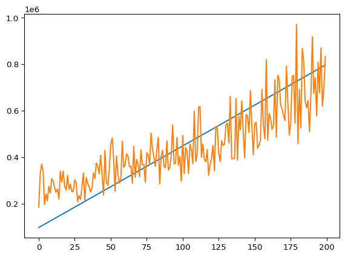

In this exercise, you’ll be working with a dataset on house sales in King County, Washington. You can get more information about this dataset here. Our first goal is to build a predictive model for the sales price.
mean squared error, root mean squared error, mean absolute error, mean absolute percentage error, and R^2 score. We’ll start with a simple model, one which uses just the square footage of living space as our only predictor variable.
Before building the model, start by looking at a scatterplot of price vs. the square footage of living space. What do you find? How strong does the relationship appear to be?
fig = plt.scatter(y = house_data['price'], x = house_data['sqft_living'])plt.title('Price vs SQFT livingspace')plt.ylabel('price')plt.xlabel('sqft_living')plt.show()

Now, let’s work towards building the model.
Create a DataFrame, X, which contains one column, the sqft_living space and a Series, y, which contains the target variable.
One of the most important concepts when it comes to machine learning is that the only performance we care about is how well the model predicts on data that it has not seen yet.
Code
X = house_data[['sqft_living']]y = house_data['price']print(X.shape, y.shape)
(21613, 1) (21613,)
One way to accomplish this is through setting aside a portion of the data as a test set and to train the model on the remaining portion.
Use the train_test_split function to create a training and a test set from X and y. Name the resulting pieces X_train, X_test, y_train, and y_test. When you do this, use 30% of the data in the test set. Also, use the random_state parameter so that we can compare model performance as we change the way we build our model.
Now, we need to fit our model. We’ll start with a linear regression model.
Import the LinearRegression class from the linear_model module. Then create a linear regression instance and fit it to the training data.
In some cases, we may want to inspect the model after it has been fit. Here, since we are working with a linear regression model, we could inspect the coefficients.
What is the intercept term, and what is the coefficient for sqft_living? How can you interpret how the model is using sqft_living to make predictions? Hint: You can get these values by looking at the .intercept_ and .coef_ attributes of the fit model.
The next step is to evaluate how well the model does on the unseen data.
Code
print(model_fit.intercept_, model_fit.coef_)
-41947.4540187621 [279.51011741]
Use the predict method to generate a set of predictions on y_test (maybe X_test?). Save the results to y_pred. Question: What type of object is y_pred? What is its shape and how does it compare to y_test?
Now, we can evaluate how well the model did. There are a number of different metrics that could be used. Let’s look at five of them, mean squared error, root mean squared error, mean absolute error, mean absolute percentage error, and R^2 score. For more information on these metrics, see https://developer.nvidia.com/blog/a-comprehensive-overview-of-regression-evaluation-metrics/.
Calculate each metric on the test set. For each one, interpret what the number means.
mean squared error: 74509993356.49603
root mean squared error: 272965.1870779423
mean absolute error: 177803.04584523648
mean absolute percentage error: 0.36040933275597725
R^2: 0.48388319278201475
It’s always a good idea to see how well your model performs against a simple baseline. In the case of regression, a very simple model would be one that just predicts the overall average home price on the training data.
Create a numpy array that is the same length as y_test which just contains a constant value equal to the mean of the target variable on the training data. Hint: you could use the full_like function from numpy to create this array. Does the model using sqft_living do better than this simple baseline model?
mean squared error: 144399156265.14728
root mean squared error: 379998.8898209405
mean absolute error: 238276.66103995038
mean absolute percentage error: 0.5347132648410233
R^2: -0.00022598498918324772
While we started with a linear regression model, there are other types of models that we could try out. A k-nearest-neighbors model generates predictions by finding the most similar points in the training data and averaging their target values. It is a non-parametric model and doesn’t assume a particular form for the relationship between the features and the target.
Fit a KNeighborsRegressor to the data using just the square footage of living space and using 5 neighbors. How do the metrics compare to those for the linear regression model?
mean squared error: 81641401216.27504
root mean squared error: 285729.594575492
mean absolute error: 188322.93272671194
mean absolute percentage error: 0.3846907900745082
R^2: 0.43448526252119435
Code
X_train, X_test, y_train, y_test = train_test_split(X, y, test_size=.3, random_state=42)
mean squared error: 81641401216.27504
root mean squared error: 285729.594575492
mean absolute error: 188322.93272671194
mean absolute percentage error: 0.3846907900745082
R^2: 0.43448526252119435
We can see how the KNN model has more flexibility than the Linear Regression model by plotting their predictions. Create a DataFrame which includes a range of typical square footage values. Hint: you can use the numpy linspace function. Generate 200 equally spaced values between 500 and 3000. Then generate predictions on these using both the linear regression and KNN model. Plot the predictions. What do you notice?
/Users/drewrichard/Documents/projects/nss/nss_projects/ml-exercise-01-DrewRichard7/.venv/lib/python3.11/site-packages/sklearn/utils/validation.py:2739: UserWarning:
X does not have valid feature names, but LinearRegression was fitted with feature names
/Users/drewrichard/Documents/projects/nss/nss_projects/ml-exercise-01-DrewRichard7/.venv/lib/python3.11/site-packages/sklearn/utils/validation.py:2739: UserWarning:
X does not have valid feature names, but KNeighborsRegressor was fitted with feature names

Finally, let’s see what happens when we add another variable. Create a new linear regression model which uses both the square footage of living space and whether or not it is waterfront. When you do this, make sure that you’re using the same train and test split by using the same random_state as above. By how much does this improve the model’s fit?
-34063.140764270676 [279.51011741]
<class 'numpy.ndarray'> (6484,) (6484,)
mean squared error: 67664973042.120766
root mean squared error: 260124.9181491861
mean absolute error: 173728.53303476996
mean absolute percentage error: 0.35537307333512475
R^2: 0.5312973700064663
An additional feature appears to improve the model fit. ** If you’ve reached this point, let your instructors know so that they can check in with you. **
Stretch Goals
One way to add complexity to the model is through using interaction terms. These allow for the relationship between sqft_living and price to differ for waterfront and non-waterfront properties. Create a column containing the product of sqft_living and waterfront. Add this to your model. Does it improve the performance? Interpret the meaning of the coefficients for the model containing the interaction.
Intercept: -17996.811689302558 Coefs: [ 265.24266825 -206141.19629208 329.78290053]
<class 'numpy.ndarray'> (6484,) (6484,)
mean squared error: 64810313257.05287
root mean squared error: 254578.69757120856
mean absolute error: 171114.89184963843
mean absolute percentage error: 0.35283522635411935
R^2: 0.5510710651524795
adding an interaction term appears to improve the model fit further
Take a look at the distribution of home prices. You’ll find that it’s highly skewed. When the target is skewed, it can be beneficial to transform the target so that it is closer to normally-distributed in order to reduce the effect of extreme values. Important Note: When comparing metrics for a transformed target and an untransformed target, it is important that you apply an inverse transformation to the predictions from the transformed model. This can be done using a TransformedTargetRegressor. Try using a log transformation on the target. Does this improve the metrics for the model?
Distribution of housing prices
Code
plt.hist(house_data['price'], bins=20)plt.title("housing price distribution (highly skewed)")plt.xlabel("price")plt.ylabel("count of homes")